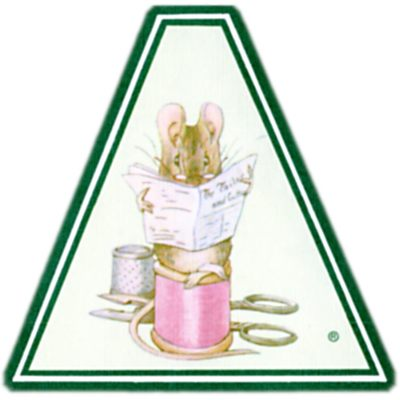

THE TAILOR OF GLOUCESTER
BY BEATRIX POTTER
Author of
"The Tale of Peter Rabbit," etc
"I'LL BE AT CHARGES FOR A LOOKING-GLASS, AND ENTERTAIN A SCORE OR TWO OF TAILORS" _Richard III_
NEW YORK
FREDERICK WARNE & CO, INC
COPYRIGHT, 1903
BY
FREDERICK WARNE & Co.
COPYRIGHT RENEWED, 1931
[All rights reserved]
PRINTED IN THE U.S.A. BY PRINCETON POLYCHROME PRESS
ISBN O 7232 0594 9 (cloth) ISBN O-7232-6227-6 (paper)
12 13 14 15 16 17 18 19 20(C)
MY DEAR FREDA,
Because you are fond of fairy-tales, and have been ill, I have made you a story all for yourself--a new one that nobody has read before.
And the queerest thing about it is--that I heard it in Gloucestershire, and that it is true--at least about the tailor, the waistcoat, and the
"No more twist!"
Christmas, 1901

Biogrophy
Beatrix Potter was born on July 28, 1866. She is an animal lover. Her books have animals as the main character. She is most famous for “The tale of Peter the Rabbit.” For more information check out these links and picture.
- Project Gutenburg Press
- Tailor of the Gloucester Ebook Page
- Tailor of the Gloucester Wiki Page
- Beatrix Potter Wiki Page
Picture of Beatrix Potter.